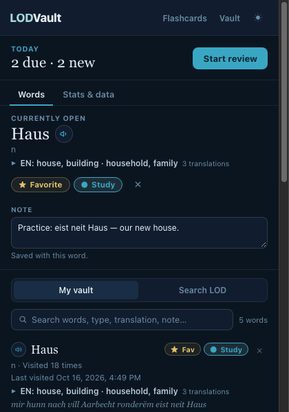
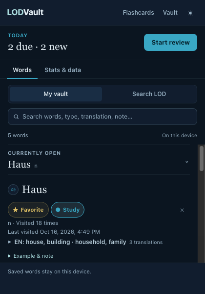

LODVault / Implementation review
Search stays put.
Actual extension pages, before and after this branch. The navy/teal palette and Georgia word headings stay. Search geometry, word actions and narrow layouts change.
A fixed search area, one content scroller.
Current-word details sit below search. Opening a word or switching source cannot move the input.

Search sits below the full current-word card. Its position and available width change with the source and result count.

The popup stays bounded. Search and metadata have their own rows; current-word details and results scroll below.
Measured changes
Same Chrome build and isolated fixtures. Popup at 420 × 600px; companion pages at 375 × 740px. Measurements compare a source round trip and content geometry, not a browser-owned extension window.
| Check | Before | After |
|---|---|---|
| Search movement on source switch | 135px | 0px |
| Content-width change on source switch | 15px | 0px |
| Input shrink when count changes | 42px | 0px |
| Flashcards horizontal overflow | 49px | 0px |
| Vault iframe below viewport | 63px | 0px |
Behavior kept intact
- My vault filtering stays local.
- Dictionary saves still fetch the canonical entry.
- Favorite and Study remain independent.
- Unchanged source round trips retain queries, scroll, open details and note editors.
- Failed note saves and deleted-word draft recovery keep their existing safeguards.
Reproduce the checks
npm test
npm run test:ui -- --capture
npm run test:popup
npm run lint
Use CHROME_PATH if Chrome is not in the default macOS location or Chromium is not on PATH. Screenshot fixtures never read a real vault.
Baseline: 93621c6. Exact measurements · Findings and implementation notes · Original prototype. Screenshots use seeded data and offline dictionary responses. The loaded Chrome action popup is checked separately in a disposable headless profile. Firefox UI, screen-reader output and increased zoom still need manual checks.